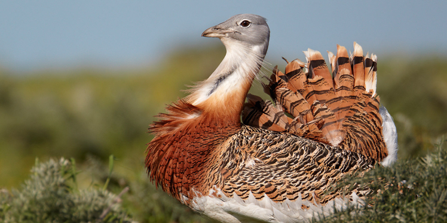

Kori Bustard
AKA: Great paauw Scientific Name: Ardeotis kori Family: Otididae Species: A. kori Speed: 80 km/h in flight Length: Male: 120 – 150 cm Female: 80 – 120 cm Mass: Male: 7 – 18 kg Female: 5.62 – 5.9 kg Wing Span: Male: 230 – 275 cm Female: 177 – 220 cm Life Span: 26 – 28 years Location: Africa to India to Australia. Diet: Insects. Small vertebrates, bird eggs and chicks. Its diet also includes seeds, roots, flowers, berries, green leaves and wild melons.
Appearance:
Mostly gray and brown. It has a large head and long legs. The chin and neck are white. The eye is pale yellow while the long bill is light greenish-horn colored.
Facts:
- It is not a migratory bird.
- It is usually very shy, running at the first sign of danger.
- Unlike most birds that scoop water with their bills, it drinks water via sucking motion.
- It is the most active in the first and last hours of daylight.